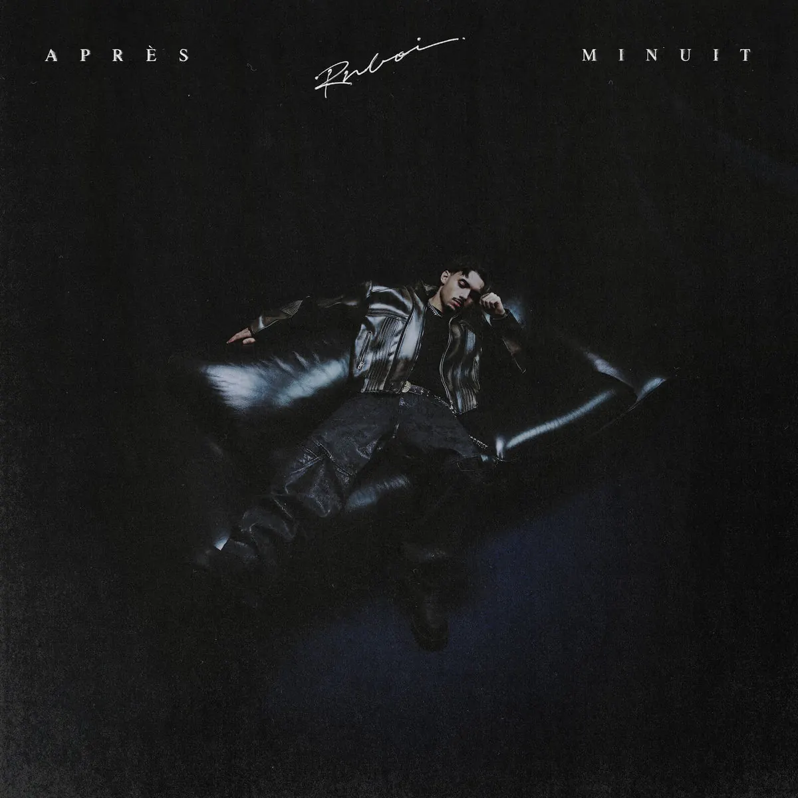

Publié le 27 novembre 2026

Le chanteur RnBoi sort son album Après Minuit ce 27 novembre 2026. Ce projet de 12 titres opte pour une approche acoustique et intime, loin des productions synthétiques de ses débuts.
RnBoi a signé sur le label Nakamura Industrie. Il s'est fait connaître grâce à des singles percutants comme BTRD ou MON BÉBÉ. Ces morceaux s'appuyaient sur des rythmiques club et des refrains immédiatement mémorisables.
Le single J'assume, dévoilé le 16 octobre dernier, traçait déjà les contours de cette évolution. RnBoi y abordait ses doutes amoureux sur un arrangement épuré, guidé par une guitare discrète.
Pourquoi RnBoi change-t-il de direction musicale ?
RnBoi s'est d'abord imposé grâce à des sonorités trap et R&B taillées pour les réseaux sociaux. Ses premiers projets multipliaient les rythmiques rapides et les effets vocaux marqués.
Avec Après Minuit, l'artiste cherche à poser un propos plus personnel. Il met de côté les boîtes à rythmes lourdes pour privilégier des compositions organiques. La guitare et le piano deviennent l'ossature principale des morceaux.
Cette démarche montre une volonté d'inscrire sa musique dans le temps long. Comme observé sur la scène francophone avec le premier album de Dalí, les arrangements épurés mettent en valeur la texture brute du chant.
Que vaut la production de l'album Après Minuit ?
Pour concrétiser cette orientation, RnBoi a fait appel à une équipe de beatmakers chevronnés. Selon les informations publiées par Ado FM, les compositeurs Tarik Azzouz, Zeg P et Seezy rejoignent les musiciens habituels Max et Seny.
La rencontre entre ces producteurs habitués au hip-hop et l'univers du chanteur fonctionne très bien. Les instruments acoustiques dominent le mixage, tandis que la basse conserve la profondeur nécessaire au R&B contemporain.
Des morceaux comme Faux pas ou Vénus, interprété avec Victoria Lilyrose, réussissent leur pari grâce à une interprétation sobre. D'autres titres souffrent en revanche d'une construction légèrement répétitive, manquant parfois de relief sur la seconde moitié du disque.
| Projet | Année | Format | Direction sonore |
|---|---|---|---|
| My Eyes Only | 2025 | EP (9 titres) | R&B synthétique et trap |
| My Eyes Only - Flashback | 2026 | Mixtape | R&B club et afrobeat |
| Après Minuit | 2026 | Album (12 titres) | R&B acoustique et soul |
Où se situe cet album dans le R&B français actuel ?
Le R&B francophone a longtemps navigué entre pop urbaine et reprises de codes américains. La démarche de RnBoi apporte une nuance intéressante à cette scène sonore.
En retirant le superflu de ses productions, le chanteur montre qu'un succès viral peut déboucher sur un disque mûr. Ce genre de prise de risque rappelle le travail d'autres artistes qui modifient leur formule, à l'image d'un A2H revenant à l'essence du rap.
Le disque dure 33 minutes et se lit d'une seule traite. Malgré quelques facilités d'écriture sur deux ou trois refrains, Après Minuit affirme la personnalité d'un interprète capable de se réinventer.